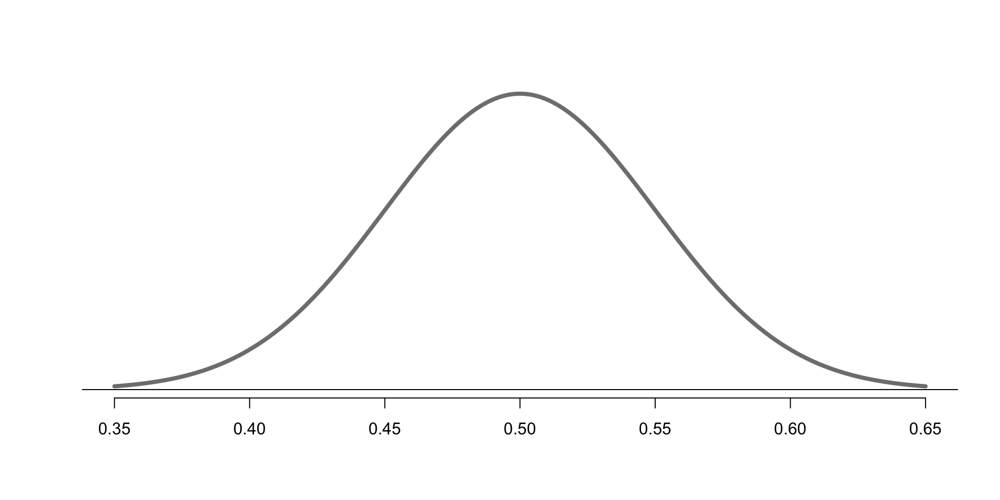

Hypothesis Tests
STAT 20: Introduction to Probability and Statistics
Adapted by Gaston Sanchez
A Loaded Coin?
Weird looking Coin
Say we find a weird looking coin on the street.
We suspect the coin is biased (maybe it lands more on Heads than Tails)
How can we determine whether the coin is biased or not?
2 Opposing Ideas
Coin is Fair
- Prob(heads) = 0.5
- Business as usual
Coin is Biased
- Prob(heads) > 0.5
- Something’s different
We need Data
To assess whether the coin is fair or not, we need to collect data.
In other words, we need to flip the coin and see what happens.
Let’s suppose we flip the coin 100 times:
\[ \bigcirc_1 \quad \bigcirc_2 \quad \bigcirc_3 \quad \bigcirc_4 \quad \dots \quad \bigcirc_{98} \quad \bigcirc_{99} \quad \bigcirc_{100} \]
Assume we get 54 heads.
What do we observe? \(\hat{p} = 54/100 = 0.54\)
Comparison
How does observed \(\hat{p} = 0.54 \ \) compare to assumed \(p_{fair}\) (idea 1: business as usual)?
\[ \hat{p} - p_{fair}? \quad \rightarrow \quad 0.54 - 0.5? \]
Yes, we are observing more heads than expected, but this is not a fair comparison because we are not taking random variability into account.
A better comparison is to express the above difference in terms of Standard Error (SE).
Comparison
How does observed \(\hat{p} = 0.54 \ \) compare to assumed \(p_{fair}\) (idea 1: business as usual)?
\[ \frac{\hat{p} - p_{fair}}{SE} = \frac{0.54 - 0.5}{SE} \]
where:
\[ SE = (p_{fair}(1 - p_{fair}) / n)^{1/2} = (0.5 \times 0.5 / 100)^{1/2} = 0.05 \]
then:
\[ z = \frac{\hat{p} - p_{fair}}{SE} = \frac{0.54 - 0.5}{0.05} = 0.8 \]
Comparison
How does observed \(\hat{p} = 0.54 \ \) compare to assumed \(p_{fair}\) (idea 1: business as usual)?
\[ \frac{\hat{p} - p_{fair}}{SE} = \frac{0.54 - 0.5}{0.05} = 0.8 \]
Our observed proportion of heads (in 100 flips) \(\hat{p} = 0.54\) is 0.8 SE’s from the assumed proportion of heads of a normal coin: \(p=0.5\)
Comparison
Under Idea-1: Business as Usual, we expect the sampling distribution of p-hats to approximate a Normal distribution
\[ \hat{p} \sim N(\mu = 0.5, \sigma = 0.05) \]
Comparison
Under Idea-1: Business as Usual, we expect the sampling distribution of p-hats to approximate a Normal distribution
\[ \hat{p} \sim N(\mu = 0.5, \sigma = 0.05) \]
Probability of observing \(\hat{p}\)
Under Idea-1: Business as Usual, we expect the sampling distribution of p-hats to approximate a Normal distribution
\[ \hat{p} \sim N(\mu = 0.5, \sigma = 0.05) \]
Probability of observing \(\hat{p}\)
What is the probability of observing \(\hat{p} = 0.54\) or something more extreme, under the assumption that the coin is fair?

Hypothesis Test
Framework
Hypothesis (2-competing ideas):
- Null hypothesis (business as usual): \(p = 0.5\)
- Alternative hypothesis (something else is going on): \(p > 0.5\)
Collect Evidence (i.e. data)
- Flip the coin, and count number of heads: e.g., 54 heads in 100 flips
- observed statistic: \(\hat{p} = 0.54\)
Test Statistic
- \(z = (\hat{p} - p) / SE = 0.8\)
P-value
- \(P(\hat{p} \geq 0.54)\): prob. of observing what we observe or something more extreme, assuming the null hypothesis is true.